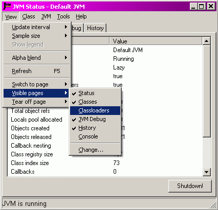

|
JNIPort for Dolphin Smalltalk |
|
|
Back to Goodies |
The JNIPort Status MonitorThe Status Monitor is the GUI of JNIPort. It provides a way to start and stop the Java runtime, and to keep an eye on what JNIPort is doing. The Status Monitor installs itself in Dolphin's 'Extra Tools' system “system folder”, and into the 'Tools⇒Additional Tools⇒' menu. The 'JVM' menu allows you to start a new runtime, and to edit the predefined settings (see Configuration). It also allows you to select which runtime to monitor, though this feature is of little use since Sun haven't implemented the ability to start more than one runtime… For a couple of simple examples of creating predefined settings, see the walkthrough of installing and configuring JNIPort.
It may be worth adding that the Status Monitor doesn't “own” the Java runtimes it
is displaying, not even if they were started from the Monitor. You can close the Monitor
without affecting the JVM; you can start new Monitors (although the tool has the normal
Dolphin The Status Monitor itself doesn't do very much; it is mostly just a container for a tabbed collection of plug-in pages. You can add or remove pages from the 'View⇒Visible pages⇒' menu:  The pages that are supplied with JNIPort are:
See the section for each page for more details.
The 'View' menu includes an 'Update interval⇒' sub-menu. Several of the pages update
at regular intervals; this option sets the interval. When a JVM instance is first created
the Status Monitor uses that JVM's settings (specifically the
You can “tear-off” individual pages into their own independent windows, if you wish, by using the 'View⇒Tear off page⇒' menu. |
Copyright © Chris Uppal, 2003-2005
Java, JNI (probably), JVM (possibly), and God knows what else, are trademarks of Sun Microsystems, Inc.